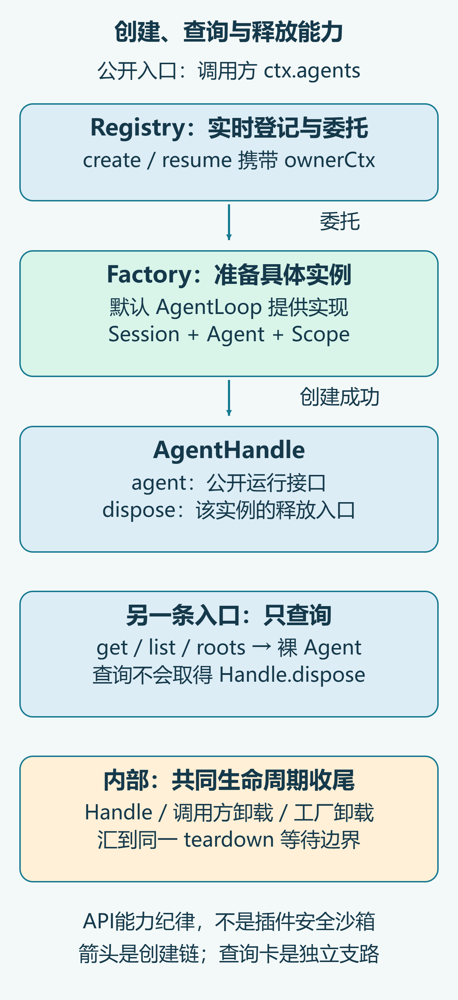
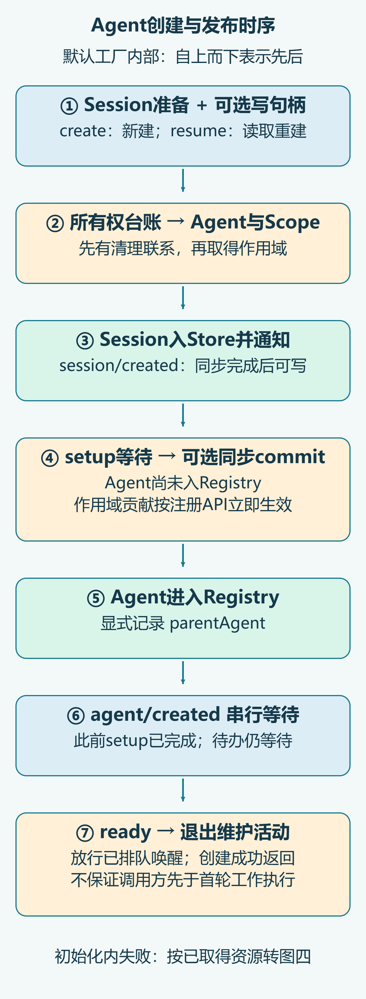
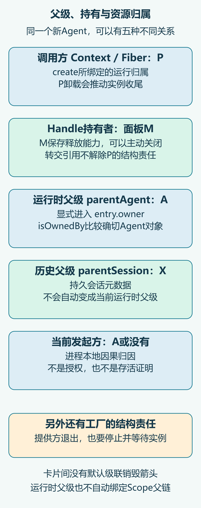
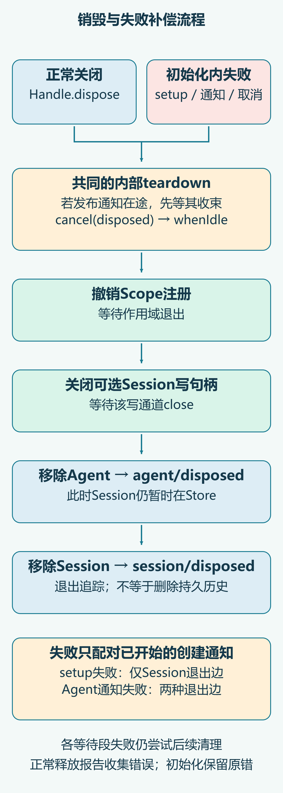

H09 作者审阅页 · 未发布。实际 LessonMarkdown 的静态渲染，折叠答案可展开；课程版本的复制交互已另经 React 挂载测试。图片在本页映射为相邻文件，不改变教材的 /course-media 路径。
Agent 实例如何创建、管理和销毁？——Registry、Factory、Handle 与所有权
120～160 分钟（分三段；作者估算，实际时长待试读，环境准备另计）
工作台有了三个助手，关闭任务时该找谁？
H03的项目助手会读README并概括；H05–H08让模型、工具、会话与入口按插件组合。现在工作台允许三个任务同时存在：Agent A阅读代码，Agent B整理文档，Agent C分析测试结果。它们可以借用同一套模型适配与工具服务，但各有Session、待办输入、运行状态和作用域贡献。这里的“同时”表示任务可以并发等待，不表示三个独立进程。
界面点击“查看代码任务”，怎样找到A？同一个任务被点击两次，怎样防止同一身份出现两个实例？关闭B时，是把它从列表删掉就够了，还是要先等正在进行的工作结束？一个只统计耗时的插件，为什么不该因为查到了B，就顺手把它销毁？如果C的初始化失败，先前准备的会话和监听又归谁收尾？
这节围绕同一项产出：画出一个Agent从准备到销毁的生命周期，为每项资源写清谁登记、谁释放、等到哪里。 模型怎样进行Turn/Step循环留H10；本课研究让那个循环有明确身份、可用边界和退出责任的外壳。
六分钟回顾：同一份代码，可以有不同的活对象
H03已经区分：Session记录已接纳的交互事实；Agent是当前使用这份记录推进工作的实例；Turn是一轮处理的边界，Step是其中模型判断及相关动作的边界。一次Turn结束，实例通常回到idle，之后还能接任务，不会自动销毁。这里不重讲循环算法。
H05的Service是具名能力，Context是插件访问能力和登记贡献的入口，inject声明依赖。H07的Fiber管理一次插件应用，Effect把资源获取与退出动作归给它，Disposer就是释放函数。H08又区分配置Entry、代码定义和运行Fiber：清单里有一行，不证明Agent实例已经创建。
再把JavaScript引用放进去：const x = agent; const y = agent并没有复制两个Agent，x与y指向同一个对象。TypeScript接口描述公开形状，具体类实现这个形状；接口存在不会执行构造器，类型中的readonly也不构成运行时权限检查。async创建返回Promise，需要等待它成功，不能把尚未完成的准备当作可用实例。try/finally让我们尝试收尾，却不会自动发现未登记的外部资源。
旧课可选对照：Stage 2.6的owner与授权、Stage 4.6的Run持久化。前者回答某用户能否操作业务数据，后者记录任务状态；都不直接等于本课“哪个Fiber负责释放这个对象”。链接沿用原权限，以上回顾已足以继续。
什么叫“活跃Agent”：idle也在名单里
先给工作台的A一个明确位置。活跃Agent在本课指当前实时注册表里存在的实例，而不是“CPU正在计算”或“正在请求模型”。idle的A也可以是活跃实例。反过来，昨天的会话记录还在磁盘上，不代表今天已有对应Agent。
公开Agent在types.ts:17–21先声明id，其余运行能力由runtime-types.ts:191–237的接口扩展补入。不能只打开一个文件就断言Agent只有id。
| 公开能力 | 在工作台里怎样理解 | 本课边界 |
|---|---|---|
| id | 当前Agent与它驱动的Session共享的身份 | 是SessionId，不是H08的Entry ID或Fiber uid |
| session | 当前关联的会话对象 | 不等于磁盘文件本身 |
| status | 对外为idle或running | 不是存在/销毁状态；维护活动中也可显示idle |
| ctx | 该Agent登记贡献的作用域入口 | 只对感知作用域的API产生相应可见性 |
| inbox | 当前待处理输入的入口与视图 | 具体领取、唤醒调度留H10 |
| model | 会话的模型选择能力 | 不是模型实例，也不直接发送请求 |
| cancel / whenIdle | 请求停止当前活动 / 等待相关活动静止 | 停止不是销毁；whenIdle不是某一条消息的回执 |
默认具体对象是ReactLoopAgent。构造器137–156行关联Session、模型选择、Inbox和Scope。多个实例可以共享loopCtx中的服务，同时各自持有上述对象。AgentLoop是创建和驱动它们的服务，ReactLoopAgent是一个具体实例；两者都不是“Session的别名”。
这里需要特别小心：Registry中的存在证明“这条实时登记还在”，不保证初始化通知已完成，也不保证它没有正在退出。创建中，Agent会先登记再等待通知；销毁中，它会保留到相关工作和资源收尾。消费者需要完整创建边界时，应等待自己的create()，而不是反复get()猜准备完成。
Registry：找得到谁，由实时登记决定
AgentRegistry（Agent实时注册表）解决“当前有哪些实例，怎样按身份找到它们”。可以类比工作台的在岗名单；类比不能推成档案库或持久数据库。其内部每项保存确切Agent对象、共享id、显式运行时owner、作用域分发载体与通知/拆除状态，见AgentEntry，217–227行。这些状态服务于当前进程的生命周期。
普通消费方用ctx.agents查询，无需导入具体循环类。以下是真实API片段，前提是工作台已挂载相关服务并持有ctx；实验A会给出完整装配：
const a = ctx.agents.get(SessionId('reader-A'));
const activeIds = ctx.agents.list().map(agent => agent.id);
const rootIds = ctx.agents.roots().map(agent => agent.id);get/list/roots，586–625行分别返回匹配的Agent或undefined、按登记顺序的新数组、owner为undefined的根级新数组。修改返回的数组不会修改表；数组里的Agent仍是原对象，不是隔离副本。根级不代表“没有任何历史父会话”，后面用具体反例说明。
get()做查找，不负责字符串格式校验。SessionId('')也只是类型品牌包装，实现22–30行不会把空串变成合法业务身份。本课空串查询返回undefined，是因为没有这样的登记，不是触发了统一的非法ID异常。产品入口与持久化后端还要执行它们自己的身份校验；不要把任意输入强转类型当作校验。
Agent的id必须等于其Session的id；enter()同时检查同id冲突，484–503行。SessionStore在prepare后还于enter重新检查，避免异步准备期间另一个事务先占用身份，见session/src/index.ts:1231–1251。所以“先get不存在，再create”只能是界面优化，不能代替最终冲突检查。发生冲突应处理拒绝，不能覆盖旧对象。
Registry也没有“为每份历史自动启动Agent”的职责。SessionStore本身管理当前内存会话，持久化由独立后端负责，见1057–1064行。历史有记录、当前Store有Session、Registry有Agent，是三种证据。
Factory：名单不用自己制造执行器
现在要为B创建实例。若Registry既保存名单，又写死模型循环、提示词和存储细节，每个只想查Agent的插件都被迫依赖那套实现。**Factory（工厂）**在这里就是“按公开约定准备一个可运行实例的提供方”。像工作台把入职流程交给装配部门；这只是职责类比，不意味着后台还有独立进程。
真实AgentFactory契约提供createAgent(ownerCtx, options)和resume(ownerCtx, options)，见index.ts:175–210。AgentRegistry接受工厂后，create()与resume()取得调用方所绑定的Context，把它和选项分别传入工厂，416–440行。Cordis追踪可能带来Context外观包装；判断归属要看实际Fiber与作用域，不能只比较两个Context外观是否===。
dsh-agent本身不会执行模型请求。 默认提供方dsh-agent-loop实现工厂；初始化时通过ctx.agents.setFactory(this)登记，见AgentLoop.[Service.init]，329–336行。消费插件依赖agents服务即可，由提供方保留运行所需的模型、工具与提示词依赖。不是消费者只写inject就自动安装loop。
setFactory()，379–399行拒绝第二个同时登记的工厂，并返回Effect释放入口。没有工厂时，创建或恢复拒绝为no agent factory registered (load an agent-loop plugin)；查找已有登记则是另一回事。工厂接口描述义务，默认loop实现这些义务；不能拿接口文字当作任意自定义工厂已经正确清理的证明。
下面的图把“查到运行对象”与“拿到释放入口”分开看。

图中“公开API”指消费者按类型约定使用的表面；“内部实现”指默认loop怎样完成这些约定。AgentRegistry还有跨包使用的高级enter/announce原语，它们是导出方法，但不该画成普通用户必须自行调用的创建步骤。我们为解释时序会读它们，不让业务插件自己拼半套生命周期。
Handle：把“可以使用”与“负责结束”分开
错误设计很容易写：给每个公开Agent都加dispose()，然后统计插件通过get('writer-B')得到它，统计失败时就“顺便释放”B。B的创建方没有关闭任务，其他持有者也不知道资源已经退出，仍拿旧引用继续发送。这把观察、控制当前活动和结束整个实例混成了一件事。
官方AgentHandle把释放能力放在另一个对象里，150–167行：
interface AgentHandle {
agent: Agent;
dispose(): Promise<void>;
}Agent是公开运行接口，AgentHandle携带这个实例的释放能力。 创建方等待create()取得Handle，观察方通过Registry只取得裸Agent。这里“裸”是指没有外层Handle，不表示对象没有其他方法。cancel也仍可控制当前工作，但不撤销整个生命周期。
Handle可以传给明确承担关闭责任的组件，因此“创建者”和“现在持有Handle的人”也未必相同。传递引用不会自动转移最初的结构归属：原调用方Fiber卸载时仍会推动收尾；工厂提供方也是结构上的共同所有者，因为实例作用域和运行能力依赖它。默认实现让这些退出入口汇入同一个记忆化teardown Promise，495–559行。不能描述为永远只有一个独占所有者。
这正接回H07：原生Effect公共Disposer重复调用可能直接返回，不重新等待；本课Handle的业务收尾特意保存了正在进行的Promise。在调用方卸载与Handle释放竞争时，两边仍要等同一生命周期停稳。具体Scope原始Disposer还被纳入有序组合，避免作为并发兄弟过早退出。565–594行是该结构的依据。
能力分离是一种公开API纪律，不是对恶意插件的进程隔离。插件是可信同进程代码，Agent还公开ctx等强能力；如果越过类型约定、反射内部对象或滥用Context，不能宣称Handle设计能提供不可绕过的安全防护。我们的分析：它主要让正常消费者的责任明确，减少无意销毁，业务授权仍需独立实现。
create与resume：起点不同，发布边界相同
ctx.agents.create({sessionId})准备全新的Session与Agent；ctx.agents.resume({resumeSessionId})要求已配置持久化，取得已有Session的写句柄、读取历史后重建新的运行对象。resume不是从内存中找回昨天那个Agent，也不是get()的别名。
| 比较项 | create | resume |
|---|---|---|
| 身份输入 | sessionId，由调用者给出 | resumeSessionId，已有持久身份 |
| Session来源 | prepare新对象，可带meta/seed | open(write)、read后prepare重建对象 |
| 存储前提 | 后端可选；存在时先取得新建写句柄 | 缺后端明确拒绝，后端/历史错误也会拒绝 |
| 公共初始化 | Session登记与通知、setup/commit、Agent登记与通知 | 同一initializeAgent流程，source为resume |
| 返回 | 拥有释放入口的Handle | 新运行实例的Handle，id仍对应原会话 |
读createAgent()，717–748行时先圈出SessionPreparation、可选存储获取、initializeAgent；再读resume/resumeWith()，756–836行的写打开、读、必要尾部补齐和prepare。恢复可能追加规范化记录，例如实践会观察到session/end-seed；“保留已有事实”不等于“绝不追加任何事件”。具体历史修复、Fork前缀、租约和磁盘格式留H17–H18。
发布不是一步赋值：Session先可见，Agent后可见
Publication（发布）在这里指把准备对象接入实时表，并按约定通知消费者；它不是“发布课程”。初始化事务指一组相关准备与退出责任受到协调，失败能把本次取得的运行资源收回；它不保证外界从未看到中间阶段。
默认流程依据initializeAgent()，465–660行，分段读成下面的真实顺序：
- 已取得Session及可选存储写句柄后，先建立取消与所有权台账，再构造ReactLoopAgent与Scope，登记调用方和提供方的退出联系。
- 在一次维护活动内，补写未存储后缀；Session进入Store，完成同步
session/created。通知期间Session仍只读；同步通知成功后才允许live append。 - 调用并等待可选
setup(agentCtx, agent)。此时Session在表中、可追加，Agent还不在Registry。 - 所有setup等待完成后执行可选同步
commit()，再检查取消；随后agents.enter(agent, parentAgent)登记Agent。 - 等待serial
agent/created监听器。它们看到登记中的Agent与setup已装好的贡献；按契约返回undefined，throw或拒绝会失败并跳过后续监听器。 - 确认仍有效，置ready；维护活动退出时放行其后等待的唤醒工作，外层创建Promise成功返回Handle。
最后一步不承诺“调用方第一行一定先于队列Turn执行”。维护退出本身可以释放唤醒，Promise兑现与驱动续接的具体先后不能被画成额外授权顺序。关键保证是setup与创建监听器先完成，排队工作后放行。实验D12在监听器门闩前检查没有Turn，放行后才看到Turn；pre-step主动拒绝，模型调用仍为零。
图二按时间往下读；左侧是消费者可观察边界，右侧标默认工厂内部步骤。

setup为何在正式发布前
假设B要安装一个仅本任务可见的提示词变量与状态监听。若先发agent/created，再慢慢安装，早到的消费者可能拿到半成品；排队输入也可能使用不完整的能力集合。setup提供这个准备窗口：用agentCtx登记，显式agent参数提供对应Session，不去猜一个不存在的agentCtx.agent反向属性。
通过感知作用域的API登记的贡献会按其规则立即生效，不是到commit才一起变可见；只是此时Agent尚未正式登记。agent/created开始时，setup中已完成的工具、提示词、监听及已等待完成的子插件已经存在。若自己启动子插件却不await，不能期待工厂发现所有离开的Promise。commit()用于发布前一刻同步复核和提交准备结果，没有数据库事务的万能回滚语义。
作用域的获取与释放在createScope()，137–147行中建立；只有感知Scope的注册API遵守其可见性，不能把普通ctx服务自动变成Agent私有副本。parentAgent也不会自动建立这个Scope库的父链，关系图下一段会分别说明。
setup只做组合，不驱动Agent。它是可信回调，技术上有完整ctx与Agent，限制依靠契约而非沙箱。创建监听器也不能await agent.whenIdle()或等待自己的owner.dispose：初始化本身占着维护活动，退出又要等监听器，容易形成互等。需要的异步安装在这里完成即可，实际对话等create成功再发。
五种身份，不能共用一个“父亲”
A发起一次整理任务，插件P调用create，Handle交给任务面板M保存；选项指定parentAgent=A，却从历史Session X派生C。这五件事完全可以同时发生：
| 问题 | 此例的身份 | 实际依据 |
|---|---|---|
| 谁调用create，哪个挂载负责生命周期 | 插件P的调用方Context/Fiber | Registry传ownerCtx；initializeAgent登记owner Effect |
| 谁现在能主动调用Handle.dispose | 面板M持有的Handle | 该引用携带的释放能力；P仍有原结构责任 |
| Registry把谁记为运行时父级 | 显式传入的确切Agent A | parentAgent进入AgentEntry.owner |
| 持久历史从哪里来 | Session X | Session header的parentSession等元数据 |
| 当前异步调用链由谁发起 | 可能是A，也可能没有 | currentInitiator等进程本地归因 |
图三用五张分开的卡，线只说明对应关系，不让一根含糊的“拥有”箭头包办所有含义。

真实判定是isOwnedBy()，603–605行比较存活条目中的owner与传入Agent对象是否相同。新建一个同id外壳不会等于原Agent；父级历史ID相同也不够。roots则只筛owner===undefined。所以一个从旧父会话恢复的Agent，如果没有传parentAgent，仍是当前运行时根级。
再细分两个容易外推的地方。第一，仅设置parentAgent并不等于安装了“关闭父级就释放全部后代”的委派协议。若子实例的调用方是独立P，它的生命周期仍归P和工厂；实践会确认关闭父Handle不会仅因这个字段自动关闭子实例。第二，Registry的owner记录不等于dsh-scope库的父链；Scope继承需要另外的显式绑定，本节不自动画出来。
发起方则回答“这条异步链最初是谁带起来的”，适合日志与度量。它可能在对象不再存活时仍被环境引用，跨进程还需要显式身份；不能据此授权，也不能当作实时存活证明。Registry的归因契约240–250行已明确这一点。AsyncLocalStorage的深入机制留后续专项，本课只保留身份分离。
dispose：先等使用者退出，再撤掉它还在用的东西
关闭B不能先删Registry，再让在途任务去读已经撤销的提示词、会话或写句柄。Quiescence（工作静止）在这里就是相关驱动与维护活动已经退出；AbortSignal只是协作停止信号，不能强制终止任意Promise。
默认Handle的teardown在index.ts:495–546按这条顺序尝试：若创建通知还在途，先等发布段结束；cancel({kind:'disposed'}, {keepInbox: !ready})后await whenIdle()；await作用域释放；await可选存储写句柄close；移除Agent登记；移除Session登记；解除追踪与相关Effect联系。初始化失败未ready时保留待办输入，正常已ready释放默认清队列。
实际顺序是工作退出 → Scope撤销 → 写句柄关闭 → Agent移除 → Session移除。 agent/disposed发生时，Agent已从表里消失，Session仍暂时在Store中；session/disposed随后发生。自己的Scoped监听已经随Scope撤销，不能依赖它接收最后的agent/disposed才去清理，资源应交给Effect。全局观察者可以看到该退出通知。
有些接口或概述注释把“注销、移Session、最后Scope”写成职责概括，不能直接拿来画严格时序；这里采用上述可执行teardown，且与运行契约及相关测试交叉核对。也不把README的根关停持久化限制，反过来概括为每次Handle.close都不工作。文档差异和未运行的根级持久化路径在源码清单单列。
Session离开当前Store并不删除持久历史文件。装有后端时，close负责相应句柄的待完成写入和所有权释放；没有后端，本课只清理当前运行状态。实践的内存后端保留已存事件，resume用新对象读回；这仍不证明磁盘flush、崩溃恢复或真实文件删除策略。
下面图四把正常退出与初始化失败接到同一收尾段，先看失败发生前究竟通知过什么。

中途失败，为何还要通知“离开”
Rollback（回滚）在本课应精确说成“收回本次取得的运行资源，并补齐已经可观察的生命周期边”。它不能让已经收到通知的插件失忆，也不能撤回setup自己写入外部服务的效果。
| 失败位置 | 已可观察的创建边 | 清理后的通知与状态 |
|---|---|---|
| Session准备/已取消信号检查失败，尚未通知 | 无 | 不虚构created或disposed；取得的资源仍按所在阶段释放 |
| 同步session/created监听器抛错 | Session通知已开始，setup未开始 | 配对session/disposed，无agent/disposed |
| setup拒绝、commit抛错或setup期取消 | Session已通知，Agent未登记 | 撤销已有Scope贡献，配对session/disposed |
| agent/created中的后续监听器失败 | Agent已登记且创建通知开始，前者可能已看到 | 等通知分发收束，Scope收尾，agent/disposed后session/disposed；后续创建监听器跳过 |
| 创建成功后正常dispose | 两种创建通知完成 | 停止与等待后依次退出实时表；不删除已存历史 |
Session创建通知与Agent创建通知也有不同失败规则：前者同步throw能否决；返回的异步Promise不被await，稍后拒绝只记录错误，不能当作已经回滚。SessionStore.announce 1287–1317行是具体依据。Agent创建通知则serial等待，并按其undefined契约编写回调，不无意返回array.push的数字来提前短路。
销毁通知属于非否决观察：Registry逐个容纳同步throw与返回Promise拒绝，不让坏观察者阻断后续观察，但也不等待这些异步观察工作完成，见emitDisposed()，537–549行。这不同于H06的通用emit；Agent分发层另做了错误容纳，不能反向改写通用事件语义。
初始化失败时，工厂会等待已进入初始化阶段的清理，然后保留原初始化错误；正常dispose则收集其等待段中的失败，完成其余收尾后拒绝。同一失败Handle再次dispose仍观察同一收尾失败，不会自动重试外部关闭。若取消发生在持久句柄取得前，创建可能先拒绝，迟到句柄再由回调关闭；底层setup的离开Promise也不会被强杀。可控等待、清理范围和错误优先级必须按阶段说明，不能承诺“任何失败都完整恢复原世界”。
同一个ID重用后，旧释放函数为何不能乱删
B关闭，稍后又在同id下启动B2。旧Handle仍被某面板保存，点击一次旧关闭按钮，不应该删B2。只写store.delete(id)会丢掉“这次生命周期”的身份。
Registry的detach闭包先保证只生效一次，再比较当前表中的entry对象是否就是它捕获的那一项，504–534行。Session也有相同的确切条目保护。新实例的字符串id可以相同，entry和Agent引用却不同；旧闭包不能越过这道边界。实践B同时验证旧Handle再次释放和原调用方后来退出，都不影响新实例。
精读只抓五个核心文件
| 阅读站 | 先看什么，再看什么 | 交出哪句解释 |
|---|---|---|
| agent/src/index.ts | AgentHandle/Factory → create/resume委托 → enter/announce → get/isOwnedBy/roots | 返回什么、谁传ownerCtx、哪一项决定运行时父级 |
| agent/src/runtime-types.ts | Agent接口扩展 → 两种生命周期事件契约 | 公开Agent能做什么，通知是否等待 |
| agent-loop/src/index.ts | 工厂登记 → createAgent/resume → initializeAgent准备、发布、teardown | 输入、可见性、正常返回、失败退出的边界 |
| agent-loop/src/agent.ts | 构造器 → runMaintenance、cancel、whenIdle | 实例怎样关联Scope，为什么先等待再撤资源；不读turn/step算法 |
| scope/src/index.ts | createScope及其dispose/rawDispose | 作用域登记的所属与失效，不把它当沙箱 |
SessionStore、dispatch、品牌函数、存储接口与官方测试是辅助证据，不要求再通读这些大文件。完整固定行号、测试名称与适用条件见本课源码断言清单。读测试要看setup、操作与断言；定位测试不等于执行它。本课运行的是下面的作者局部测试，复用官方夹具模式而非原封不动执行其文件清理钩子。
三项实践：真的创建、查询与释放
新建独立实验目录，使用随课lab文件。公共装配改编官方scope-lifecycle.spec.ts的harnessWithLoop：挂真实服务及空agents的loop，不挂文件系统或Shell工具。原生工具执行器只是分派能力，不凭空增加文件访问工具。本课没有模型适配器；唯一放行唤醒测试只提供固定元信息，pre-step拒绝，stream被调用就失败。
想深入再看：完整公共准备：support.ts
// 改编官方 scope-lifecycle.spec.ts 的 harnessWithLoop；省去模型适配器。
import { Context } from '@deepseek-ai/cordis';
import AgentLoop from '@deepseek-ai/dsh-agent-loop';
import AgentRegistry from '@deepseek-ai/dsh-agent';
import SessionProjectionRegistry from '@deepseek-ai/dsh-session-projection';
import LlmRuntime from '@deepseek-ai/dsh-llm';
import SessionStore from '@deepseek-ai/dsh-session';
import SystemPrompt from '@deepseek-ai/dsh-system-prompt';
import ToolRuntime from '@deepseek-ai/dsh-tools';
import * as NativeToolExecutor from '@deepseek-ai/dsh-tool-executor-native';
export { SessionId } from '@deepseek-ai/dsh-session';
export { agentEvents } from '@deepseek-ai/dsh-agent';
export { createUserMessage } from '@deepseek-ai/dsh-llm';
export const gate = () => Promise.withResolvers<void>();
export async function registryOnly() {
const ctx = new Context();
await ctx.plugin(SessionProjectionRegistry);
await ctx.plugin(AgentRegistry);
return ctx;
}
export async function harness(storage = false) {
const ctx = new Context();
await ctx.plugin(LlmRuntime);
await ctx.plugin(SessionStore);
await ctx.plugin(SessionProjectionRegistry);
await ctx.plugin(SystemPrompt);
await ctx.plugin(ToolRuntime);
await ctx.plugin(NativeToolExecutor); // 仅执行器，没有登记任何文件/Shell工具。
await ctx.plugin(AgentRegistry);
const disk = storage ? memoryStorageFixture(ctx) : undefined;
const loop = await ctx.plugin(AgentLoop, { agents: [] });
return { ctx, loop, disk };
}
export async function consumer(ctx: Context) {
let ownerCtx!: Context;
const owner = await ctx.plugin({ name: 'h09-consumer', inject: ['agents'], apply(inner: Context) { ownerCtx = inner; } });
return { owner, ownerCtx };
}
// 仅替代持久化后端：内存、单写者、事件数组。不是官方存储、磁盘恢复或崩溃保证。
// Registry / Session / Scope / AgentLoop 均仍为官方真实实现。
export function memoryStorageFixture(ctx: Context) {
const records = new Map<string, { header: any; events: any[]; writing: boolean }>();
const trace: string[] = [];
let failClose = false;
function channel(record: { header: any; events: any[]; writing: boolean }, access: string) {
let closed = false;
const handle = {
id: record.header.id, header: structuredClone(record.header), inheritedEventCount: 0, access,
async read(offset = 0, length?: number) { return { eventState: 'detached', events: structuredClone(record.events.slice(offset, length === undefined ? undefined : offset + length)) }; },
async append(events: readonly any[]) { for (const e of events) { if (e.seq !== record.events.length) throw Error('fixture sequence conflict'); record.events.push(structuredClone(e)); } },
async flush() {},
async close() { if (closed) return; closed = true; if (access === 'write') record.writing = false; trace.push('close:' + record.header.id); if (failClose) throw Error('fixture close failed'); },
async [Symbol.asyncDispose]() { await handle.close(); },
};
return handle;
}
const backend = {
async create(header: any) {
if (records.has(header.id)) throw Error('fixture stored identity exists');
const r = { header: structuredClone(header), events: [], writing: true };
records.set(header.id, r); trace.push('create:' + header.id); return channel(r, 'write');
},
async open(id: string, access: string) {
const r = records.get(id); if (!r) throw Error('fixture stored identity missing');
if (access === 'write') { if (r.writing) throw Error('fixture already owned'); r.writing = true; }
trace.push('open:' + id); return channel(r, access);
},
};
ctx.provide('sessionPersistence', backend as never);
ctx.on('session/event', (session, event) => {
const r = records.get(session.id);
if (r?.writing) { if (event.seq !== r.events.length) throw Error('fixture feed conflict'); r.events.push(structuredClone(event)); }
});
return { backend, records, trace, failClose() { failClose = true; } };
}公共文件末尾的memoryStorageFixture只替代存储后端：保存事件、模拟写持有和close。它没有磁盘、崩溃、迁移、跨进程锁语义，不能称为官方持久化实现；其中Map不是AgentRegistry的模拟。AgentRegistry始终加载固定官方源码。
实践A：查询名单与身份
想深入再看：实践 A 完整程序：registry.ts
import assert from 'node:assert/strict';
import { harness, SessionId } from './support.ts';
export async function registryExample() {
const { ctx } = await harness();
try {
const a = await ctx.agents.create({ sessionId: SessionId('reader-A') });
const b = await ctx.agents.create({ sessionId: SessionId('writer-B') });
const c = await ctx.agents.create({ sessionId: SessionId('tester-C'), parentAgent: a.agent });
assert.equal(ctx.agents.get(a.agent.id), a.agent);
const list = ctx.agents.list(); list.length = 0;
const result = { sameReference: ctx.agents.get(a.agent.id) === a.agent,
active: ctx.agents.list().map(x => x.id), roots: ctx.agents.roots().map(x => x.id),
missing: ctx.agents.get(SessionId('missing')) === undefined,
emptyLookup: ctx.agents.get(SessionId('')) === undefined };
await assert.rejects(ctx.agents.create({ sessionId: a.agent.id }), /already exists/);
await c.dispose(); await b.dispose(); await a.dispose();
return result;
} finally { await ctx.fiber.dispose(); }
}想深入再看：实践 A 详细参考答案
list按登记顺序为reader-A、writer-B、tester-C；roots只有前两项。get(A)与Handle.agent是同一个Agent引用。查询missing与空串没有匹配项，都是undefined，不是格式校验异常。list返回新数组，清空它之后Registry仍有三个实例。
重复创建A在Session身份检查拒绝，不能覆盖原实例。另有C03直接核AgentRegistry的id/session匹配与登记冲突；D14让两个同id创建并发准备，最终只有一个成功，失败方的清理不影响赢家。两类测试分别说明Session侧与Agent侧的最终冲突边界，不能只靠调用前get一次。
实践B：有引用，不自动有释放入口
想深入再看：实践 B 完整程序：ownership.ts
import assert from 'node:assert/strict';
import { harness, consumer, SessionId } from './support.ts';
export async function ownershipExample() {
const { ctx } = await harness();
try {
const { owner, ownerCtx } = await consumer(ctx);
const parent = await ctx.agents.create({ sessionId: SessionId('parent-live') });
const h = await ownerCtx.agents.create({ sessionId: SessionId('child-live'), parentAgent: parent.agent,
meta: { parentSession: SessionId('different-history') } });
const queried = ctx.agents.get(h.agent.id)!;
const before = { bareHasDispose: 'dispose' in queried, handleHasDispose: typeof h.dispose === 'function',
runtimeChild: ctx.agents.isOwnedBy(h.agent.id, parent.agent), historyParent: h.agent.session.header.parentSession };
await h.dispose();
const replacement = await ctx.agents.create({ sessionId: h.agent.id });
await h.dispose(); // 陈旧Handle不能清除后来复用同ID的新生命周期。
assert.equal(ctx.agents.get(replacement.agent.id), replacement.agent);
await owner.dispose(); // 旧消费者结束也不能影响新实例。
assert.equal(ctx.agents.get(replacement.agent.id), replacement.agent);
await replacement.dispose(); await parent.dispose();
return { ...before, staleDisposePreservedReplacement: true };
} finally { await ctx.fiber.dispose(); }
}想深入再看：实践 B 详细参考答案
bareHasDispose=false，handleHasDispose=true；runtimeChild=true，historyParent为different-history。裸Agent是运行接口，释放能力在外层Handle；这是API分工，不是不可绕过的安全隔离。
第一次dispose结束后，用同ID创建的新Agent是另一生命周期。旧Handle再次dispose不会删新实例；原消费者卸载也不应误删新实例。新实例由新的调用归属负责，旧退出闭包只指向旧对象与entry。
D08还验证：同id的另一对象不能冒充确切parent；有历史父Session但未传parentAgent的实例仍是root；仅关闭独立调用方之外的父Handle，不会因owner字段自动级联关闭子实例。随后卸载真正的消费者，子实例才按结构责任退出。Handle持有者、caller、parent、历史谱系不能互换。
实践C：逐个打开失败窗口
想深入再看：实践 C 完整程序：failures.ts
import assert from 'node:assert/strict';
import { harness, SessionId, gate } from './support.ts';
export type FailureCase = 'setup' | 'commit' | 'session-listener' | 'agent-listener' | 'cancel' | 'normal';
export async function failureExample(kind: FailureCase) {
const { ctx } = await harness();
const trace: string[] = [], id = SessionId('failure-' + kind);
let cleanups = 0;
const abort = new AbortController(), entered = gate(), release = gate();
ctx.on('session/created', () => { trace.push('session/created'); if (kind === 'session-listener') throw Error('fixture session-listener'); });
ctx.on('session/disposed', () => { trace.push('session/disposed'); });
ctx.on('agent/created', () => { trace.push('agent/created'); if (kind === 'agent-listener') throw Error('fixture agent-listener'); });
ctx.on('agent/created', () => { trace.push('later-listener'); });
ctx.on('agent/disposed', () => { trace.push('agent/disposed'); });
try {
const creating = ctx.agents.create({ sessionId: id, signal: abort.signal, setup: async agentCtx => {
trace.push('setup'); agentCtx.effect(() => () => { cleanups++; trace.push('scope-clean'); });
if (kind === 'setup') throw Error('fixture setup');
if (kind === 'cancel') { entered.resolve(); await release.promise; }
return { commit() { trace.push('commit'); if (kind === 'commit') throw Error('fixture commit'); } };
} });
// 立即挂拒绝处理；取消不会让失去联系的第三方Promise神奇消失。
const settled = creating.then(handle => ({ handle }), error => ({ error }));
if (kind === 'cancel') { await entered.promise; abort.abort(Error('fixture cancel')); }
const outcome = await settled;
release.resolve(); // 让受控setup自己的异步工作退出。
if (kind === 'normal') { assert.ok('handle' in outcome); await outcome.handle!.dispose(); }
else { assert.ok('error' in outcome); assert.match(String(outcome.error), /fixture/); }
return { kind, trace, cleanups, agentAbsent: ctx.agents.get(id) === undefined, sessionAbsent: ctx.sessions.get(id) === undefined };
} finally { release.resolve(); await ctx.fiber.dispose(); }
}想深入再看：实践 C 详细参考答案
setup：session/created → setup → scope-clean → session/disposed。commit失败在setup之后多commit，仍没有Agent创建或退出。同步Session监听失败：session/created → session/disposed；setup未开始，故本题setup清理计数0，其余路径计数1。
Agent监听失败：session/created → setup → commit → agent/created → scope-clean → agent/disposed → session/disposed。later-listener不会执行，前面已看见创建的观察者仍需要成对的退出边。
setup期取消与setup失败的trace相同；取消使工厂不再等待未完成setup，不能强杀setup自身Promise。实验最后主动release，让自己启动的异步回调退出；旧agentCtx已经失效，不应在迟到续接中继续登记。正常路径先完成两个Agent创建监听器，再由Handle释放，Scope、Agent、Session依序退出。
D07用真实runMaintenance承载受控工作，取消signal先到，但scope与两张表一直保留到work-end；Handle、owner、factory三入口均验证。它证明等待维护活动这条子路径，不冒充真实模型或工具中断。D10的resume使用真实工厂和Session重建，但后端是内存夹具；旧事实前缀不变，允许并明确检查新加session/end-seed，不能按事件总数不变来判恢复。
运行、预期与证据等级
想深入再看：统一运行入口：demo.ts
import { registryExample } from './registry.ts';
import { ownershipExample } from './ownership.ts';
import { failureExample, type FailureCase } from './failures.ts';
console.log('A', JSON.stringify(await registryExample()));
console.log('B', JSON.stringify(await ownershipExample()));
for (const kind of ['setup', 'commit', 'session-listener', 'agent-listener', 'cancel', 'normal'] as FailureCase[]) {
console.log('C', JSON.stringify(await failureExample(kind)));
}在AI Foundry根使用作者运行器，已有依赖之外只解析隔离安装的固定Zod 4.4.3，不安装到课程项目。运行前逐文件核固定源码字节，新OS临时目录保留，不执行递归清理：
node docs/deepseek-harness-v2/h09/scripts/run-labs.mjs正常输出24项通过、mutation为EXPECTED_FAILURE，并给出临时路径。原始TAP、demo的A/B/C JSON、每次失败的原始记录和依赖锁证据随交付保留。运行器把临时副本错误地改成“裸Agent有dispose”，原测试必须非零；不能改正确答案求绿。
已有独立、固定Commit且依赖齐备的Harness checkout，也可把全部lab文件复制进新建tmp/h09-agent-lab，Node沿用官方>=24.9.0。在这个新目录运行下面两条；普通checkout不需要作者隔离解析用的bootstrap：
node ../../node_modules/tsx/dist/cli.mjs --tsconfig ../../tsconfig.base.json demo.ts
node ../../node_modules/tsx/dist/cli.mjs --tsconfig ../../tsconfig.base.json --test lifecycle.test.ts| 等级 | 本轮状态与实际对象 | 不能外推什么 |
|---|---|---|
| A 教学模拟 | 未单列执行；没有Map版AgentRegistry模拟 | 不能把存储夹具升级为官方存储 |
| B 真实Cordis | 在C/D内部运行，未另算独立B用例 | 不把同一用例重复计数 |
| C 真实Registry局部 | 3项：无工厂、调用方委托、确切entry与陈旧detach | 使用结构Agent/工厂替身，未运行Loop |
| D 真实AgentLoop创建销毁 | 21项：A/B/C、可见性、等待、失败、恢复入口、竞争等 | 恢复后端是内存夹具；非官方后端/磁盘/真实模型 |
| E 完整Harness集成 | NOT_RUN | 未启动完整应用、官方套件或跨进程恢复 |
七道思考题：解释因果与反例
1. Registry为什么不直接负责模型循环？
想深入再看：思考 1 参考答案
Registry回答“当前有哪些Agent、按哪个身份找到、谁是实时父级”，消费者未必需要默认模型循环。Factory让创建与恢复遵守同一公开入口，默认AgentLoop负责准备和驱动。这样查询插件依赖agents即可，具体提供方可以替换，但也增加工厂契约与组合验证责任。
没有工厂时create/resume拒绝，不能因为Registry已挂载就宣称模型能运行。dsh-agent没有执行模型请求；换工厂也必须重新验证初始化、事件和清理，不能只看接口相同。
2. 查询到了Agent，为什么不等于拥有销毁权限？
想深入再看：思考 2 参考答案
get返回公开运行对象；create/resume才返回外层Handle，其中dispose是具体生命周期的释放能力。普通统计插件拿到Agent，按API约定可以观察或调用已开放行为，却没有因此获得Handle。cancel只针对当前活动，也不能代替结束实例。
这不是用户身份授权或恶意代码隔离。可信插件仍持有强Context，不能把类型表面当不可绕过的安全边界；业务授权应另外实现。正确答案要同时说明能力分离的用途与限制。
3. 为什么Handle与Agent分开，又不能说只有一个所有者？
想深入再看：思考 3 参考答案
两者分开让“使用/查询”与“结束整个实例”的责任可分别传递。创建方得到Handle，可以交给关闭管理器；原调用Fiber的生命周期义务仍然存在，工厂提供方卸载也必须停止并等待它造出的实例。
默认loop将这些入口汇到同一记忆化teardown，而不是让每个入口独立重复清理。H07的普通Effect公共重复调用不保证重新等待，Handle另有业务等待边界。Handle转交不是自动解除原Fiber归属，更不是绝对单一所有者模型。
4. 从旧父会话恢复的实例，为何还能是root？
想深入再看：思考 4 参考答案
meta.parentSession记录持久历史谱系，不会自动还原当前进程中那个父Agent对象。Registry只把显式parentAgent写入entry.owner；未给它就是运行时root。isOwnedBy比较确切Agent对象，不能拿同id的新对象顶替原父级。
caller Fiber、Handle持有者和发起方归因也分别有依据。仅凭历史或currentInitiator推父级会混淆关系；仅设置parentAgent也没有安装完整后代取消/委派协议，后者由H21分析。
5. setup失败没有发agent/created，为什么仍要做事务化清理？
想深入再看：思考 5 参考答案
因为Session已进入Store且完成通知，AgentScope也已经构造，setup还可能登记监听、提示词或子插件。没有Agent创建通知不等于什么都没发生。工厂需要停止未完成工作、撤销作用域、关闭取得的写句柄、拆掉Session，并配对session/disposed。
若失败发生在Agent通知开始后，前面监听者已可观察到它，还需配对agent/disposed。补偿事件不能撤回之前观察，已存事实和外部写入也不会自动消失。只删一条Map记录既漏资源，也无法解释观察到的半段生命周期。
6. 为什么相同ID的旧Disposer不能删除新实例？
想深入再看：思考 6 参考答案
字符串ID可在旧生命周期完整退出后复用，但entry与Agent对象身份已不同。detach闭包只处理它捕获的确切entry，先用一次性标记避免重复，再比较store.get(id)是否还是该entry。这样旧句柄即使迟到调用，也没有“按名字删除当前任何对象”的能力。
这与单纯检查“ID存在”不同。实践B让旧Handle再次dispose，C03直接测试高级detach，D14测试并发准备的赢家仍在；三条证据覆盖的对象不同。不能把某一条通过推广为所有后端租约竞争都正确。
7. H07–H09综合：配置禁用工厂时，在途工作与新实例分别怎样？
前提：H08的Loader禁用loop条目；一个由独立消费者创建的Agent正跑维护工作，收到取消后仍要等release；其setup注册了一个状态监听器。有人建议先删Registry，再按同IDcreate一个替身，把旧监听器留到“最后广播disposed”时自清理。
想深入再看：思考 7 参考答案
配置禁用使提供方Fiber退出，H07的资源机制启动已登记清理；H09中工厂是共同结构所有者，要取消并等相关活动退出。release未放行时，旧工作仍可能使用Scope与Session，不能先撤掉这些资源。新创建也不能绕过正在退出的工厂和当前占用身份。
维护活动退出后先Scope撤销，再关闭可选写句柄，随后Agent与Session退出实时表。Scoped状态监听器随Scope撤销，不能依赖它在最终agent/disposed时才自清理。只删Registry会让旧活动失去可追踪状态，旧引用也不会变成新实例。
重新启用配置可能产生新提供方Fiber；能否恢复某个具体Agent还取决于启动配置、持久化与调用入口，不能由Entry仍在就推“业务对象自动复活”。正确修复应保留停止/等待/撤销协议，等待旧身份退出后再按明确创建或恢复入口建立新生命周期。H08配置变化、H07 Effect、H09 Handle是连着工作的三层；不承诺外部副作用回滚。
把完整生命周期带到H10
回到三个任务：Registry让工作台找到当前实例；Factory按公开契约准备它；Handle让承担关闭责任的组件拥有释放入口；调用方和提供方把资源退出责任接到各自生命周期。Session先准备与通知，setup完成后才登记Agent，再等创建监听器；失败根据已发生的阶段收尾，正常销毁先等工作退出。父级、历史与发起方分别取证，同id也不能替代对象身份。
进入H10前，交出自己的“准备→发布→退出”图，并解释何时Session可见、何时Agent可查、何时create成功、销毁时先保留哪些资源。下一问才是：实例已准备好以后，Inbox输入怎样驱动Turn与Step，何时继续、何时停止？ 本课不实现完整循环、提示词组装、流协议、持久恢复或Subagent委派，H09到这里完成。